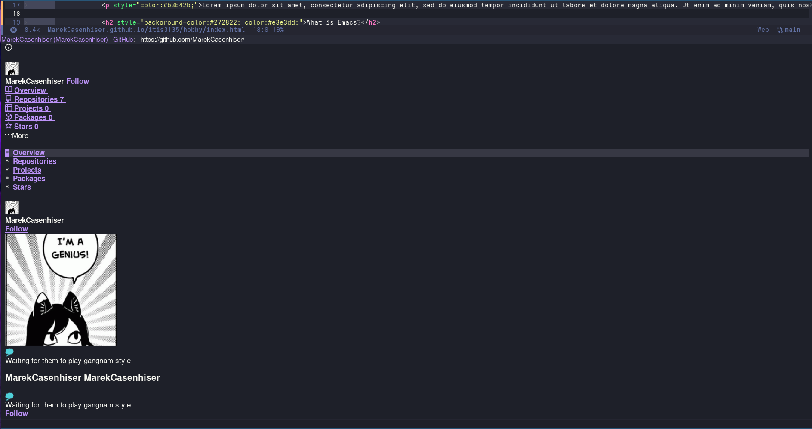
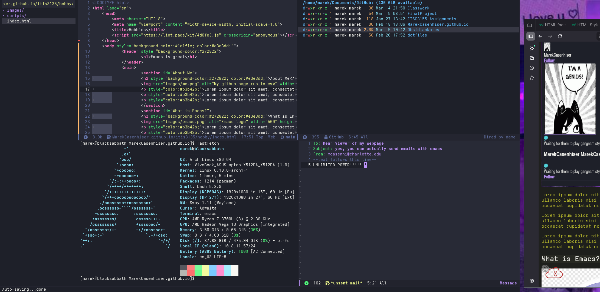
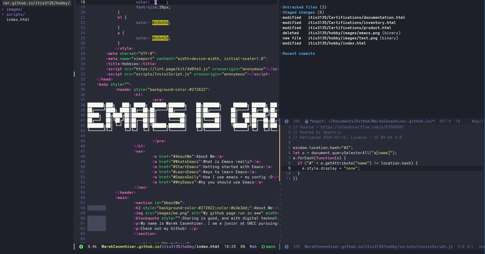
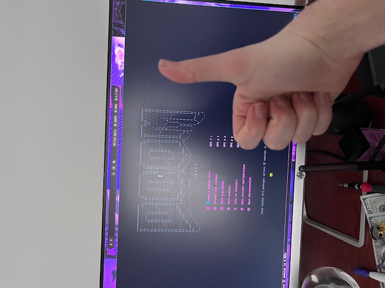
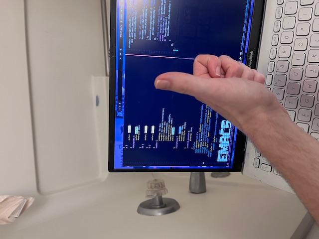
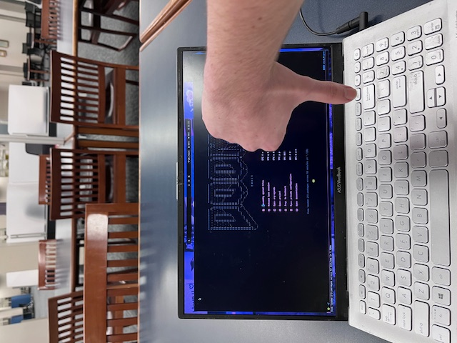
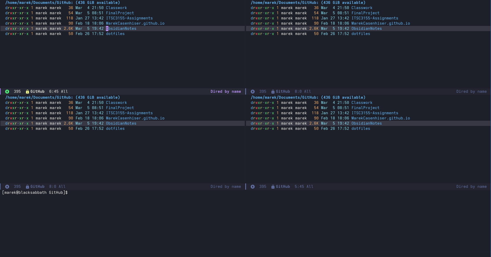

About Me

Sharing is good, and with digital technology, sharing is easy.
-Richard Stallman
My name is Marek Casenhiser. I am a junior at UNCC pursuing a degree in computer science.
At the bottom of this page, there should be a few buttons. One leads to my design firm, and the other two are for my github and linkedin. Go check em out!
What is Emacs?

I use Emacs, which might be thought of as a thermonuclear word processor.
-Neal Stephenson
The question you should be asking for any text-editor or IDE is "Can it do the things I need?". For Emacs, the answer is yes. And more. Without touching your mouse. Written entirely in Lisp, Emacs has over 10,000 builtin commands, extensive documentation, and endless customization Emacs is the perfect text-editor for any aspiring hacker/45 year old!
How I Use Emacs in My Daily Life

Here is a list of a few features of Doom Emacs that I tend to use the most. Note that some are external and others are native to Emacs.
| ...For webdevelopment | ...For penetration testing and cybersecurity | ...For general devlopment and text traversal |
| simple-httpd | Tramp | multiple-cursors |
| html-mode | bash-ts-mode | evil |
| magit | dired | yasnippet |
Best Times to Start Getting Into Emacs!
Realistically, there isn't a particularly wrong time to start getting into Emacs. However, I think there are levels of progress as a developer to use the tool that I think would be more beeneficial to other text editors such as VsCode or intellij.
For the college students and semi experienced devs: my pitch to use software like this is to keep in mind that a lot of "modern" IDEs are built to pander to begginners. While this is fine initially, many of the extensions offered by VScode burden developers with the use of the mouse (see link on why I use Emacs). Additionally, older IDEs come with a ton of useful documentation and give users the ability to speed up their workflow. If you want to take your programming game to the next level, then Emacs is for you.
For the greybeards and technical hobbyists: It is very likely that a lot of you have already heard of a text-editor such as Emacs before and likely have their own opinions on this quirky lisp-interpreter. That being said, for the same reasons why I would reccommend to others to try linux it is worth taking the time to at least mess around with Emacs as a hobby. The potential for customization is endless. So much so that arguably Emacs is more an operating system than a text-editor. Between that and Vi where Vi is more meant as a simple IDE, Emacs gives you much more to work with so why not give it a shot!
The Best Places to use Emacs!
In the confort of your own home!

In the shower!

While stressing out in the library about whether or not you will finish a project in time!

Why I Use Emacs

The question that all tinkerers, computer science majors, or developers should ask when picking up new software should always be "is this worth my time?". Now that means a lot of things to a lot of people. To me, I would argue that useful software is important for these reasons:
- It teaches me something useful
- It is faster than what I already use
- It gives me more control than what I already use
Overwhemingly so, this is the case for the majority of Open-Source software and text editors. Emacs is the king of Open-Source software. Wherein compared to other IDEs such as Visual Studio code or VI while Emacs does have a higher skill curve, Emacs also outcompetes both of these editors in either customizability, speed, or a distinct lack of bloatware and ai slop that only serve the purpose of slowing your computer down. If my rationale was convincing enough for you, then theres a clickable image below that will take you to where you can install Emacs.